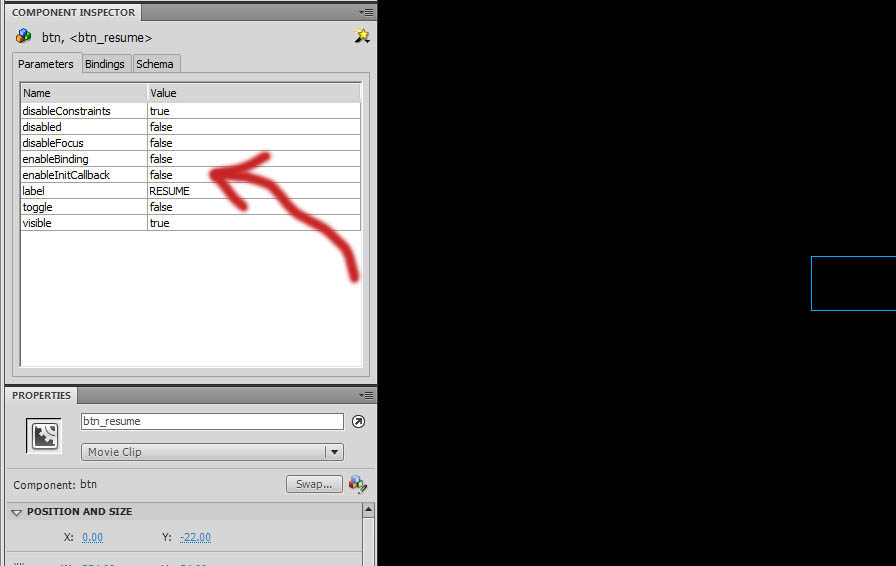
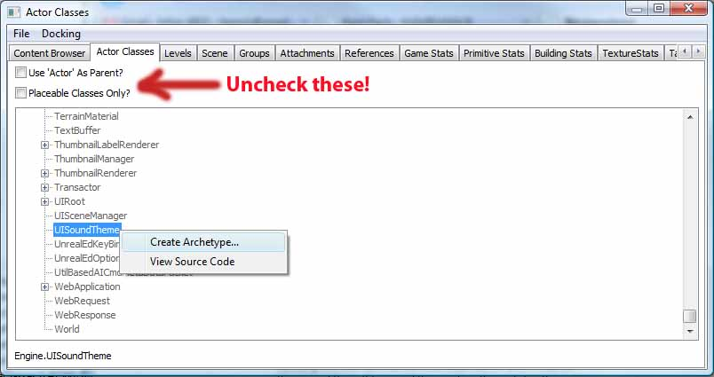
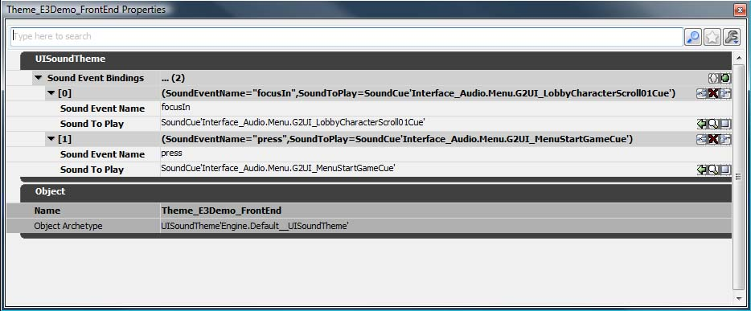

Scaleform 技术指南
概述
虚幻引擎 3 中的 Scaleform GFx 集成可以将 Adobe Flash Professional 中构建的界面和菜单作为抬头显示器 (HUD) 和菜单。这个文档是供程序员使用 Scaleform GFx 系统参考的技术指南。它将会包括实现 HUD 或菜单的主要类，它还会说明它们在过程中的位置以及用途。
免责声明
Scaleform and GFx是Scaleform 公司的注册商标。Scaleform GFx ©2010 Scaleform Corporation。版权所有...
Adobe和Flash是Adobe Systems在美国和/或其他国家的注册商标或商标。
GFxUI 组件参考
GFxUI 组件构成了显示 Scaleform GFx 界面的基础系统。整个过程由一个新的 HUD 子类开始。这个 HUD 类主要负责设置 GFxMoviePlayer，而它可以负责播放 GFxMovie。GFxMovie 包含很多可以控制显示的信息以及与玩家之间进行交互的 GFxObject。
GFxMovie
整个 Scaleform GFx 系统主要关注的是 GFxMovie 的使用。这是从 Flash 中导入到引擎的实际 Swf 动画，这个引擎中包含时间轴、ActionScript 代码、图片资源、CLIK 对象等等。通过播放并操作这些动画创建与玩家进行互动的界面。例如，这个文档的大部分内容都在说明在虚幻引擎 3 的范围内如何执行这些操作。
GFxMoviePlayer 类
GFxMoviePlayer 类是所有负责初始化和播放 Scaleform GFx 动画的类的基础类。为了实现播放器负责的单独动画特有的专门功能，要对这个类进行细分。HUD 类可能会随时引用一些类，播放您的游戏界面的各个元素。
+
GFxMoviePlayer Properties
（点击查看）
数据库
- DataStoreBindings -
- DataStoreSubscriber - 引用该动画玩家的
GFxDataStoreSubscriber 。
Display(显示)
- RenderTexture - 应该将动画渲染为
TextureRenderTarget2D 。如果为 None ，会将动画渲染为帧缓冲。可以使用它将 Scaleform 界面应用于世界中的表面。
- bDisplayWithHudOff - 如果为 TRUE，这个动画玩家将会渲染，即使
bShowHud 为 FALSE。通常会将菜单设置为 TRUE，而将 HUD 设置为 FALSE。
- ExternalTextures - 在动画玩家加载一个新的动画时，ExternalTexture 绑定的数组将会自动替换。
- RenderTextureMode - 玩家的渲染模式。
- RTM_Opaque - 没有混合不透明的覆盖层。
- RTM_Alpha - 与 BLEND_Translucent 结合使用，不支持添加。
- RTM_AlphaComposite - 与 BLEND_AlphaComposite 结合使用。
- bEnableGammaCorrection - 如果为 TRUE，在将这个动画写入目标表面之前将会对其进行反差系数校正。
通用
- MovieInfo - 引用当前正在播放的
SwfMovie 。
- bMovieIsOpen - 当前动画是否打开。在调用
Start() 的时候将其设置为 TRUE，而在调用 Close() 的时候将其设置为 FALSE。
- LocalPlayerOwnerIndex - 进入
GamePlayers 数组 Engine 类中拥有该动画的 LocalPlayer 的索引。
- ExternalInterface - 引用将会从 ActionScript 中接收到
ExternalInterface 调用的 Object。如果为 None ，将会通过这个动画玩家本身传递所有 ExternalInterface 调用。
- WidgetBindings - 控件名称以及相关控件的
GFxObject 子类之间的控件绑定数组。
输入
- Capturekeys - 这个动画播放器正在监听将会捕获的关键帧 Names 的数组，例如，那些不会被传递到游戏中的关键帧。
- FocusIgnoreKeys - 如果是个焦点动画，那么那些关键帧 Names 的数组将会被传递到游戏中，例如，会将所有输入数据传递到这些关键帧“之外”的动画中。
- bAllowInput - 如果为 TRUE，那么允许这个动画播放器接受输入事件。默认值为 TRUE。
- bAllowFocus - 如果为 TRUE，那么允许这个动画播放器接受焦点事件。默认值为 TRUE。
- bOnlyOwnerFocusable - 如果为 TRUE，那么在这里只可以定向
LocalPlayerOwner 中的输入数据。
- bDiscardNonOwnerInput - 如果为 TRUE，那么从不是动画播放器的所有者的
LocalPlayer 中接受到的输入数据将会被删除，而且不起任何作用。应该将其与 bOnlyOwnerFocusable 结合起来使用，使动画播放器只回复一个播放器，但是在其他播放器中处理所有输入数据。
- Priority - 这个动画播放器的优先级。用于确定在多个动画播放器同时打开的时候渲染器和焦点顺序。
- bCaptureInput - 如果为 TRUE，该动画播放器将会捕获输入数据。
- bIgnoreMouseInput - 如果为 TRUE，该动画播放器将会忽略鼠标输入事件。
回放
- bWidgetsInitializedThisFrame - 如果为 TRUE，在这一帧对该动画播放器中的一个控件进行初始化。它将会在完成该动画的
Advance() 后触发 PostWidgetInit() 事件。
- bLogUnhandledWidgetInitializations - 如果为 TRUE，具有“不是”通过
WidgetInitialized() 控制的初始化回调的控件将会输出一个通知进行调试。
- TimingMode - 动画回放的计时模式。
- TM_Game - 使用游戏的 delta 时间向前快进播放动画（例如，暂停游戏可以暂停动画）。
- TM_Real - 动画将会以平常的回放速度继续播放，不管是慢动作模式还是处于暂停状态。
- bAutoPlay - 如果为 TRUE，那么将会在通过
Init() 初始化这个动画播放器之后开始播放并快进当前动画。
- bPauseGameWhileActive - 如果为 TRUE，游戏将会在这个动画播放器处于打开状态时暂停。
- bCloseOnLevelChange - 如果为 TRUE，那么只要关卡更改就会关闭这个动画。注意： 只有使用 TM_REAL 计时模式的动画在关卡更改的过程中可以保持打开状态。
声音
- SoundThemes - 声音主题名称和实际 UISoundThemes 之间的声音主题绑定数组。
+
GFxMoviePlayer Functions
（点击查看）
外部纹理
ExternalTexture 结构体可以存储动画的图片资源（动画中图片资源上的“链接”标识符）和虚幻纹理资源之间的映射。它允许这个动画使用的图片进行运行时重新映射。在运行时可以使用 SetExternalTexture() 替换任何含有链接标识符的纹理。
请参阅运行时交换图片了解更多信息。
成员
- Resource - 纹理的链接标识符。
- Texture - 映射到链接标识符的纹理。
声音主题绑定
SoundThemeBinding 结构体可以将声音主题名称绑定到一个实际的 UISoundTheme，控制这个动画中对象的声音事件。声音事件可以通过 CLIK 窗体控件或由美工人员手动进行触发。每个事件包含一个方案名称和要播放的事件。这个映射可以将美术人员指定的方案名称绑定到 UISoundTheme 资源，然后这个资源可以将事件名称绑定到各种声效或动作。
请参阅 UI 声音主题了解更多信息。
成员
- ThemeName - 声音主题的名称，由美术人员在动画中指定。
- Theme - 可以控制
ThemeName 的声音事件的声音主题。
窗体控件绑定
GFxWidgetBinding 结构体将动画中的 CLIK 窗体控件实例与 GFxObject 的一个特殊 UnrealScript 子类结合起来，在这里添加窗体控件的 Flash 名称，然后指定这个类。它将会创建 WidgetInitialized() 的 GFxObject 参数作为相应的子类。
请参阅窗体控件初始化和绑定了解更多信息。
成员
- WidgetName - 动画中的 Widget 的名称。
- WidgetClass - 要链接到
WidgetName 的 GFxObject 子类。
GFxObject 类
GFxObject 类代表 GFxMovie 中的一个元素。从技术角度上看，它可以是从变量对象、函数对象和可播放对象中的任何对象，例如，图片或 CLIK 组件。
+
GFxObject Properties
（点击查看）
- Value - 一组可以存数这个
GFxObject 引用的 GFx 端 GFxValue 的参考信息的数组。
- SubWidgetBindings - 已经发送到这个窗体控件作为它们的
WidgetInitialized() 回调的窗体控件的 GFxWidgetBinding 的数组。请参阅 GFxMoviePlayer 的 WidgetBindings 了解详细信息。
+
GFxObject Functions
（点击查看）
存取器
- Get [Member] - 返回变量的
ASValue 值。这个通用存取器比指定类型的版本速度慢得多。如果您知道您要访问的变量的类型，那么可以换成使用下面的其中一个变量。
- GetBool [Member] - 返回变量的
bool 值。
- GetFloat [Member] - 返回变量的
float 值。
- GetString [Member] - 返回变量的
string 值。
- GetObject [Member] [type] - 返回指定的
GFxObject 。
- Member - 要存取的
GFxObject 的名称。
- type - 可选项。如果已经指定，那么在它属于这个类型的情况下只会返回 GFxObject。但是，不会强制将这个返回值设置为这个类型。如果您需要将它设置为这个类型，那么您需要转换结果。
- Set [Member] [Arg] - 设置变量的值。这个通用设置器比指定类型的版本速度慢得多。如果您知道您要设置的变量的类型，那么可以换成使用下面的其中一个变量。
- Member - 要设置值的变量的名称。
- Arg - 要设置给变量的
ASValue 值。
- SetBool [Member] [b] - 设置
bool 变量的值。
- Member - 要设置值的变量的名称。
- b - 要设置给变量的
bool 值。
- SetFloat [Member] f] - 设置
float 变量的值。
- Member - 要设置值的变量的名称。
- f - 要设置给变量的
float 值。
- SetString [Member] [s] [InContext] - 设置
string 变量的值。
- Member - 要设置值的变量的名称。
- s - 要设置给这个变量的
string 值。
- InContext - 在解析文本中出现的任何标签时要使用的 TranslationContext。
- SetObject [Member] [val] - 设置
GFxObject 变量的值。
- Member - 要设置值的变量的名称。
- val - 要设置给这个变量的
GFxObject 值。
- SetFunction [Member] [context] [fname] -
- TranslateString [StringToTranslate] [InContext] - 平移一个字符串以便处理标记。
- StringToTranslate - 要翻译的文本。
- TranslateContext - 在解析文本中出现的任何标签时要使用的 TranslationContext。
对象界面
- GetDisplayInfo - 返回
GFxObject 的 ASDisplayInfo 显示信息属性。
- GetPosition [x] [y] - 输出
GFxObject 的位置。
- x - 输出。输出水平方向位置。
- y - 输出。输出垂直方向位置。
- GetColorTransform - 返回
GFxObject 的 ASColorTransform 颜色转换。
- GetColorTransform - 返回
GFxObject 的 ASColorTransform 颜色转换。
- GetDisplayInfo - 返回
GFxObject 的 ASDisplayInfo 显示信息属性。
- d - 包含新的显示信息属性的
ASDisplayInfo 。
- SetPosition [x] [y] - 设置
GFxObject 的位置。
- x - 新的水平方向位置。
- y - 新的垂直方向位置。
- SetColorTransform [cxform] - 设置
GFxObject 的颜色转换。
- cxform - 包含新的颜色转换的
ASColorTransform 。
- SetDisplayMatrix [m] - 设置
GFxObject 的显示转换矩阵。
- SetDisplayMatrix3D [m] -
- SetVisible [visible] - 设置
GFxObject 的可见性。
- visible - 如果为 TRUE，那么
GFxObject 可见。否则，将不可见。
- GetText - 返回这个
GFxObject 文本字段中的文本。
- SetText [text] [InContext] - 设置这个
GFxObject 的文本字段。
- text - 要设置的新文本。
- InContext - 在解析文本中出现的任何标签时要使用的 TranslationContext。
数组存取器
- GetElement [index] -
- GetElementObject [index] [type] -
- GetElementBool [index] -
- GetElementFloat [index] -
- GetElementString [index] -
- SetElement [index] [Arg] -
- SetElementObject [index] [val] -
- SetElementBool [index] [b] -
- SetElementFloat [index] [f] -
- SetElementString [index] [s] -
数组对象界面
- GetElementDisplayInfo [index] -
- GetElementDisplayMatrix [index] -
- SetElementDisplayInfo [index] [d] -
- SetElementDisplayMatrix [index] [m] -
- SetElementVisible [index] [visible] -
- SetElementPosition [index] [x] [y] -
- SetElementColorTransform [index] [cxform] -
数组成员存取器
- GetElementMember [index] [Member] -
- GetElementMemberObject [index] [Member] [type] -
- GetElementMemberBool [index] [Member] -
- GetElementMemberFloat [index] [Member] -
- GetElementMemberString [index] [Member] -
- SetElementMember [index] [Member] [arg] -
- SetElementMemberObject [index] [Member] [val] -
- SetElementMemberBool [index] [Member] [b] -
- SetElementMemberFloat [index] [Member] [f] -
- SetElementMemberString [index] [Member] [s] -
函数属性
- ActionScriptSetFunction [Member] - 将 ActionScript 中的这个
GFxObject 函数属性设置为 UnrealScript 代理，在 UnrealScript 函数中使用这个代理调用这个函数。它是可以获取从 ActionScript 进入 UnrealScript 的回调的有效方法。
- ActionScriptSetFunctionOn [target] [Member] - 将 ActionScript 中指定的
GFxObject 设置为 UnrealScript 代理，在 UnrealScript 函数中使用这个代理调用这个函数。它是可以获取从 ActionScript 进入 UnrealScript 的回调的有效方法。
- target - 要设置给这个函数的
GFxObject 。
- Member - 要设置的函数的名称。
ActionScript 界面
- Invoke [Member] [args] - 调用动画上的 ActionScript 函数，其中使用 args 中的值作为它的参数。它的速度要比使用某一个 ActionScript*() 方法创建封装函数调用 ActionScript 方法慢，但是不需要执行子类。它适用于一次性函数或其中参数长度可变的函数。
- Member - 指定要调用的函数名称的字符串。
- args - 要传递给被调用函数的
ASValue 参数数组。
- ActionScriptVoid [method] - 在 UnrealScript 函数内部进行调用的时候，调用指定的 ActionScript 函数，其中没有返回值，包含封装 UnrealScript 函数的参数。这是通过 UnrealScript 函数调用 ActionScript 函数的首选方法，因为它比 Invoke 快，而且性能消耗低。
- ActionScriptInt [method] - 在 UnrealScript 函数内部进行调用的时候，调用指定的 ActionScript 函数，其中返回
int 值，包含封装 UnrealScript 函数的参数。这是通过 UnrealScript 函数调用 ActionScript 函数的首选方法，因为它比 Invoke 快，而且性能消耗低。
- ActionScriptFloat [method] - 在 UnrealScript 函数内部进行调用的时候，调用指定的 ActionScript 函数，其中返回
float 值，包含封装 UnrealScript 函数的参数。这是通过 UnrealScript 函数调用 ActionScript 函数的首选方法，因为它比 Invoke 快，而且性能消耗低。
- ActionScriptString [method] - 在 UnrealScript 函数内部进行调用的时候，调用指定的 ActionScript 函数，其中返回
string 值，包含封装 UnrealScript 函数的参数。这是通过 UnrealScript 函数调用 ActionScript 函数的首选方法，因为它比 Invoke 快，而且性能消耗低。
- ActionScriptObject [path] - 在 UnrealScript 函数内部进行调用的时候，调用指定的 ActionScript 函数，其中返回
GFxObject 值，包含封装 UnrealScript 函数的参数。这是通过 UnrealScript 函数调用 ActionScript 函数的首选方法，因为它比 Invoke 快，而且性能消耗低。
- ActionScriptArray [path] - 在 UnrealScript 函数内部进行调用的时候，调用指定的 ActionScript 函数，其中返回一个
GFxObject 值的数组，包含封装 UnrealScript 函数的参数。这是通过 UnrealScript 函数调用 ActionScript 函数的首选方法，因为它比 Invoke 快，而且性能消耗低。
动画控制
- GotoAndPlay [frame] - 跳到指定的帧，然后从这一帧开始播放。
- frame - 要跳过的这一帧的帧标签（区分大小写）。
- GotoAndPlayI [frame] - 跳到指定的帧，然后从这一帧开始播放。
- GotoAndStop [frame] - 跳到指定的一帧，然后在这一帧停止。
- frame - 要跳过的这一帧的帧标签（区分大小写）。
- GotoAndStopI [frame] - 跳到指定的一帧，然后在这一帧停止。
- CreateEmptyMovieClip [instancename] [depth] [type] - 在动画中创建一个空的 MovieClip。然后可以像任何其他 MovieClip 一样使用上面的函数对它进行操作。
- instancename -
- depth -
- type -
- AttachMovie [symbolname] [instancename] [depth] [type] - 将符号附加到指定的动画实例。如果在对象范围内没有发现名称为 InstanceName 的实例，那么会创建并返回一个新的实例。
- symbolname -
- instancename -
- depth -
- type -
Widget Initialization -
- WidgetInitialized [WidgetName] [WidgetPath] [Widget] - 在通过
GFxMoviePlayer::SetWidgetPathBinding() 绑定到这个窗体控件的路径中初始化将 enableInitCallback 设置为 TRUE 的 CLIK 窗体控件时引擎调用的事件存根。允许可以封装功能的 GFxObject 子类为它们的子窗体控件进行初始化处理，GFxMoviePlayer 则不可以。在窗体控件经过处理的情况下返回 TRUE，否则返回 FALSE。子类需要重载这个类。
- WidgetName - 进行初始化的窗体控件的名称。
- WidgetPath - 到进行初始化的窗体控件的路径。
- Widget - 引用进行初始化的
GFxObject 窗体控件。
- WidgetUnloaded [WidgetName] [WidgetPath] [Widget] - 在通过
GFxMoviePlayer::SetWidgetPathBinding() 绑定到这个窗体控件的路径中卸载将 enableInitCallback 设置为 TRUE 的 CLIK 窗体控件时引擎调用的事件存根。在窗体控件经过处理的情况下返回 TRUE，否则返回 FALSE。子类需要重载这个类。
- WidgetName - 卸载的窗体控件的名称。
- WidgetPath - 到卸载的窗体控件的路径。
- Widget - 引用卸载的
GFxObject 窗体控件。
显示信息
ASDIsplayInfo 结构体可以存储显示对象的属性，这样运行时使用它们更加方便快捷。可以获取并修改任何 GFxObject 的显示信息，然后将其重新应用于使用上述 Object Interface 函数的对象。
要了解有关使用显示信息的更多信息，请参阅使用窗体显示信息部分。
成员
- [X/Y/Z] -
GFxObject 的坐标位置。
- Rotation -
GFxObject 绕 Z 轴的旋转量。
- [X/Y]Rotation -
GFxObject 绕水平和垂直（X 和 Y）轴的旋转量。
- [X/Y/Z]Scale -
GFxObject 的调整量。
- Alpha -
GFxObject 的不透明度，范围为 [0, 1]。
- Visible - 如果为 TRUE，
GFxObject 可见。否则，它不可见。
- has[X/Y/Z] - 在
GFxObject 包含 X、Y 和/或 Z 位置信息的情况下为 TRUE。
- hasRotation - 在
GFxObject 包含旋转量信息的情况下为 TRUE。
- has[X/Y/Z] - 在
GFxObject 包含 X 和/或 Y 旋转量信息的情况下为 TRUE。
- has[X/Y/Z]Scale - 在
GFxObject 包含 X、Y 和/或 Z 调整量信息的情况下为 TRUE。
- hasAlpha - 在
GFxObject 包含 alpha 信息的情况下为 TRUE 。
- hasVisible - 在
GFxObject 包含可见性信息的情况下为 TRUE。
颜色转换
ASColorTransform 结构体可以为使用上述的 Object Interface 函数的操作存储颜色转换信息。颜色转换信息可以用于调整显示对象中的颜色值，例如文本或图片。
成员
- multiply - 乘以显示对象的初始颜色的
LinearColor 。
- add - 与进行乘法运算后的显示对象颜色相加的
LinearColor 。
UnrealScript和ActionScript
下面详细描述了在 UnrealScript 和 ActionScript 之间来回通信使用的主要概念和技术。
通过 UnrealScript 调用 ActionScript 函数
有多个方法来从UnrealScript中调用ActionScript 函数，但是以下列出了两个比较好的方法：
方法1: 封装UnrealScript 函数
这个方法是从UnrealScript中调用ActionScript 函数的比较好的方法。要想调用ActionScript函数，您可以使用和该函数具有相同参数和返回值的UnrealScript函数来封装该函数。在底层，Scaleform GFx ActionScript函数( ActionScriptVoid 、 ActionScriptInt 、 ActionScriptFloat 、 ActionScriptString ActionScriptWidget_ 、每个函数按照它们各自的返回类型进行命名)将会查看调用函数的参数列表，并且会把这些参数传递到ActionScript 运行时系统。所以，比如，如果您想调用以下ActionScript 函数：
public function MyActionScriptFunc(param1:String,param2:Object):Void
{
//做一些有趣的事情！
}
从UnrealScript中，您将创建以下函数：
function CallMyActionScriptFunc(string Param1, GFxObject Param2)
{
ActionScriptVoid("MyActionScriptFunc");
}
当调用时，集成代码将会检查 CallMyActionScriptFunc 的参数列表，并且把这些参数转换为它们的Scaleform对等量，然后在ActionScript中调用函数。对于具有返回类型的ActionScript 函数，可以在GFxObject 中使用其它的 ActionScript* 方法。这些函数的值是从ActionScript中的返回值。
方法2: 使用Invoke
这种方法需要更多的内存消耗，因为必须创建结构体来作为传入参数和返回值。它也需要设置更多的冗余代码。最后，您不能把 GFxObject 参数值在ActionScript中来回传递。由于 GFxObject 参数所以我们不能使用上面的示例，预示我们为这个示例使用了新的ActionScript 函数：
public function MyActionScriptFunc(param1:String,param2:Number):Bool
{
// 多一些其它的令人兴奋的事情!
return TRUE;
}
通过 Invoke 调用这个函数的相应的UnrealScript脚本是：
function bool MyFunction()
{
local ASValue RetVal;
local array<ASValue> Parms;
Parms[0].Type = AS_String;
Parms[0].s = Param1;
Parms[1].Type = AS_Number;
Parms[1].n = Param2;
RetVal = Invoke("MyActionScriptFunc", Parms);
return RetVal.b;
}
尽管这个方法比较冗繁，但它并没有严格地要求定义一个调用ActionScript方法的函数，所以当您不希望继承 GFxObject 类来添加函数时，及使用这个方法处理一次性需求的情况是有用的。同时，它是使用变量参数长度调用ActionScript函数的唯一方法。
ActionScript调用UnrealScript 函数
简单的方法: 对于事件通知及其它的一次性情况是有用的。
从ActionScript 调用UnrealScript 函数要比从UnrealScript 中调用ActionScript函数简单得多。从ActionScript中简单地使用具有您想调用UnrealScript中的函数的名称及您想传入的所有参数的 ExternalInterface's Call 方法。这些参数将会通过引擎转换为UnrealScript的等价物。将会在相应的 GFxMoviePlayer 实例中通过名称查找函数。比如，在ActionScript中：
import flash.external.ExternalInterface;
// ...
ExternalInterface.call("MyUnrealScriptFunction", param1, param2, param3);
上面的代码然后在Unreal的当前 GFxMoviePlayer 实例中查找名称为"MyUnrealScriptFunction"的函数，并把那些参数转换为UnrealScript中的那个函数的参数，然后调用那个函数。注意，在这个实例中UnrealScript中的参数列表是具有权威性的，所以如果从ActionScript 传入的参数不能类型转换为UnealScript函数的参会苏类型，那么将把它们设置为NULL或它们的默认值。
中级方法: 对于在 ActionScript 中设定函数调用是有用的。
可以强制任何ActionScript函数调用一个UnrealScript代理。要想完成这个操作，您可以使用 ActionScriptSetFunction() 函数封装器。作为示例，假如视频中有一个的 DoFancyThings() 函数，该函数最终要调用UnrealScript中的一个代理，如果您现执行ActionScript调用该 DoFancyThings() 函数，那么您需要在 GFxMoviePlayer 中设置以下代码：
class MyDerivedGFxMoviePlayer extends GFxMoviePlayer;
// 从脚本的其他地方进行调用，初始化动画
event InitializeMoviePlayer()
{
// 设置我们的代理使其在 ActionScript 中被调用
SetupASDelegate(DoFancyThings);
}
// ...
delegate FancyThingsDelegate();
function DoFancyThings()
{
// 在这里设置代码...
}
function SetupASDelegate(delegate<FancyThingsDelegate> d)
{
local GFxObject RootObj;
RootObj = GetVariableObject("_root");
ActionScriptSetFunction(RootObj, "DoFancyThings");
}
使用上面的代码，在从 InitializeMoviePlayer() 中对 SetupASDelegate() 进行调用后，所有到 DoFancyThings() 函数的 ActionScript 调用都将会被传送到 UnrealScript 的 DoFancyThings() 函数。参数将会从ActionScript类型自动地转换为代理所定义的Unreal 类型，所以程序员需要负责确保它们相匹配。
注意，对于其它的ActionScript封装函数， ActionScriptSetFunction() 从调用函数的参数中获取代理信息，在这个例子中是 SetupASDelegate() 。调用函数可以具有除了delegate(代理）之外的其它参数，但是在参数列表中遇到的第一个delegate(代理)将会备用作为回调。
进一步讲，在上面的示例中，我们在视频的根部设置了函数。这也可以是视频中的其它对象。在 GFxObject 中有一些等价函数，它们在它们引用的ActionScript 对象上直接地设置函数代理。除了不需要在 ActionScriptSetFunction() 函数调用中明确地指定对象外，它们操作方式是相通的。
了解 ActionScriptSetFunction
当在 Flash 文件中调用一个 ActionScript 函数时，ActionScriptSetFunction 允许您执行一个 UnrealScript 函数。
示例： 在我们假想的 Flash 文件，我们在 ActionScript 中调用一个名为 MyASFunction() 的函数，但是实际上这个函数不在 ActionScript 中，我们希望每次在 Flash 文件中请求这个函数的时候可以发出名为 DoThis() 的 UnrealScript 函数。
用处： 它有很多用处。一个很好的用处可能是当您在很多视图中共享同一个 Flash 文件的时候，但是希望每个视图分别控制不同的情况。您可以在 UnrealScript 中为每个视图编写一个 DoThis() 函数，分别进行不同的操作，不需要为每个视图生成一个独一无二的 Flash 文件。因此，每当 MyASFunction() 在共享的 Flash 文件中被调用的时候，它都会根据您所使用的视图在 UnrealScript 中执行仅有的 DoThis() 函数。
步骤 1
定义这个代理。
delegate int MyDelegate(bool bTrue);
步骤 2
在 UnrealScript 中创建 DoThis() 函数。它的参数和返回类型必须与步骤 1 中的代理定义相符。这是每次在 ActionScript 中调用 MyASFunction() 时将会执行的函数。
function int DoThis(bool bTrue)
{
local int myNum;
myNum = 5;
`log("Do this UnrealScript function? " @ bTrue);
return myNum;
}
步骤 3
接下来，创建可以进行交换魔术的 UnrealScript 函数。这个函数希望将我们在步骤 1 和 2 中编写的代理看做是一个参数。然后它会缓存一个对 _global 的引用，它会包括整个动画视频，包括 _root。接下来，它会使用 ActionScriptSetFunction 指定每次在 Flash 文件中调用 MyASFunction() 执行我们传递给它的代理，在这个实例中 - DoThis() 。
function SetMyDelegate( delegate<MyDelegate> InDelegate)
{
local GFxObject _global;
_global = GetVariableObject("_global");
ActionScriptSetFunction(_global, "MyASFunction");
}
步骤 4
现在我们只需要执行 SetMyDelegate 函数，然后将 DoThis() 函数传递给它。
SetMyDelegate(none); // 首先清除它
SetMyDelegate(DoThis);
步骤 5
最后，在 ActionScript 中，以某种方式调用这个 MyASFunction 。
ActionScript 2.0
// MyASFunction() 实际上不在 ActionScript 中。
// 在这里调用它将会执行 DoThis() 函数
// 在 UnrealScript 中找到。
MyASFunction(true);
结果应该是每当在 Flash 文件中调用 MyASFunction() ，虚幻记录都会输出以下内容：
Do this UnrealScript function? True
获取 SWF 的原始尺寸
一段介绍您如何在 Unrealscript 中获得 SWF 文件的原始尺寸的代码。
Unrealscript
var GFxObject HudMovieSize;
simulated function PostBeginPlay()
{
Super.PostBeginPlay();
CreateHUDMovie();
HudMovieSize = HudMovie.GetVariableObject("Stage.originalRect");
`log("Movie Dimensions: " @ int(HudMovieSize.GetFloat("width")) @ "x" @ int(HudMovieSize.GetFloat("height")));
}
使用控件
使用 GFxObject 子类
需要代码作为驱动进行交互的复杂控件的基本实践是在UnrealScript中制作一个 GFxObject 的子类来封装需要的功能，把函数调用封装到ActionScript 函数中，并添加针对那个视频剪辑的 状态跟踪/动画播放 信息。要想完成这个操作，请简单地设置 GFxObject 的子类，并添加您的功能即可。
这允许您使用UnrealScript的wrapper(封装器)方法来添加ActionScript 函数调用(方法1，正如上面所提到的 “从UnrealScript中调用ActionScript 函数“)，同时制作一个帮主函数来包含时间轴命令，比如 GotoAndPlay() ，以便控制视频剪辑。
为了获得一个到使用您新子类的 ActionScript 窗体控件的引用，您可以使用以下列出的两种方法其中的一种。
方法1: 使用 *__GetObject()__
获取您想要得到的子类的窗体引用的最简单方法是将一个类指定为 GetVariableObject() 的第二个参数（如果通过 GFxMoviePlayer 进行调用）或 GetObject() （如果通过 GFxObject 进行调用）。这会导致引用返回为指定类的新建实例。不幸的是，因为这是一个可选参数，并且不是函数中的第一个参数，所以不能强制设置返回类型，因此必须手动地进行类型转换，如下所示：
local MyGFxObjectSubclass Widget;
Widget = MyGFxObjectSubclass( GetVariableObject("MyGFxObjectName", class'MyGFxObjectSubclass' );
方法2: 使用 WidgetBindings 或 SubWidgetBindings
包含 WidgetInitialized() 回调的窗体控件可以被添加到 GFxMoviePlayer's WidgetBindings 数组，前提是它们受动画播放器本身的控制，或者是在通过 SetWidgetPathBinding() 将它们发送给 GFxObject 的情况下是 GFxObject's SubWidgetBindings 数组。当调用那个控件的 WidgetInitialized() 时，它将会传入适当的 GFxObject 的子类，正如在 WidgetBindings / SubWidgetBindings 数组中指定的那样。要想获得关于这个的详细信息，请参照下面的"使用 WidgetInitialized() 和WidgetBindings进行初始化及绑定"部分。
窗体控件实例化
要想从UnrealScript中实例化控件，只要简单地使用标记名称和实例名称调用 GFxObject's AttachMovie() 即可。注意，视频剪辑标记必须在要被实例化的库中！ 如果页面中有一个和您想创建的剪辑一样的另一个视频剪辑，通常这是经常有的情况， 请使用以下代码作为模板。在这个实例中，通过创建一个新的标记为“btn”的按钮的实例，我们创建了一个新的实例名称为"mc_MyNewButton" 的按钮。
function MyUnrealScriptFunction()
{
local GFxObject MyNewWidget;
MyNewWidget = GetVariableObject("_root").AttachMovie("btn", "mc_MyNewButton");
}
注意，这个实例中，我们创建了一个和视频根部相关的按钮。但是，由于 AttachMovie() 是 GFxObject 的一个函数，所以您可以按照自己的意愿创建新的动画剪辑实例作为它的子代（您调用 AttachMovie() 的 GFxObject 将会成为新对象的父代）。然后像任何其他 GFxObject 操作这个对象。
窗体控件初始化和绑定
通常，当某些空间在时间轴上被初始化时，进行函数回调是有用的。当空间在第一帧时不存在时，这显得尤其重要。因为直到控件第一次在时间轴上出现之前 ActionScript 不知道控件的状态，所以我们添加了一个函数调用 WidgetInitialized() ，当 ActionScript 创建一个控件时调用该函数。
- 仅会为那些把 enableInitCallback 设置为true的CLIK 控件调用 WidgetInitialized() 函数！ 这样是为了降低从ActionScript 到引擎的函数调用，因为并不是所有的控件(比如这些没装饰控件或者那些很少通过代码改变的控件)都需要这个功能。同时可以手动地添加这个函数调用，请参照以下的“例外”部分获得如何手动添加调用的信息。
- 要想在ActionScript中设置函数调用，首先要选择您想为其调用函数的控件。如果您有一个控件包含了几个小的控件，我们推荐您在父项控件上设置回调，然后在手动地操作及存储到父项控件范围内的子项控件的引用。这是因为 WidgetInitialized() 传入控件名称，该名称可以在视频的不同剪辑中共享，所以两个单独的控件可能最终会共享 WidgetInitialized() 调用栈中的同一个名称。也可以通过控件的路径来区分不同的控件，该路径是随同控件的名称一同传入到 WidgetInitialized() 中的。
- 选中控件，在Component Inspector(组件查看器)中查找 enableInitCallback 变量，并把它设置为true。

注意: 如果在您的当前布局中没有Component Inspector(组件查看器)，您可以通过从Window(窗口)菜单中选择"Component Inspector(组件查看器)"或者通过按下Shift+F7来显示它。
- 保存FLA，并发布SWF(File(文件)->Publish or Shift + F12(发布或Shift+F12))，然后正常地把它导入到引擎中。
现在，当任何时候在视频中创建您标记的控件时，UnrealScript将会收到一个包含 GFxMoviePlayer的WidgetInitialized() 事件的函数调用，且该函数具有控件的名称、控件的完整路径及指向这个控件的 GFxObject 。
有时候为了封装功能，使得创建并传入到 WidgetInitialized() 的引用是 GFxObject 子类而不是正常的 GFxObject 是有用的。比如，如果您知道您有一个特殊的包含标签、图片和其它数据的“scoreboard item(记分板项)”控件，您可以继承 GFxObject 类制作一个子类，并把封装通过UnrealScript函数改变控件的标签和图片的功能。要将特定窗体控件名称绑定到指定的 GFxObject 子类，那么在通过您的动画播放器的 WidgetInitialized() 函数控制窗体控件的情况下请使用 GFxMoviePlayer 中的 WidgetBindings 。比如，如果您想让所有具有名称'MyScoreboardWidget'的 WidgetInitialized() 调用传入一个到UnrealScript类 ScoreboardWidget (它继承于 GFxObject )的引用，您可以在 GFxMoviePlayer 的默认属性中向 WidgetBindings 中添加一项，如下所示：
class ScoreboardGFxMoviePlayer extends GFxMoviePlayer;
// ...
defaultproperties
{
WidgetBindings(0)={(WidgetName=MyScoreboardWidget,WidgetClass=class'ScoreboardWidget')}
}
为了防止主要容器控件的功能被子类控件所划分，比如菜单面板或记分牌控件，所以把那个控件的 WidgetInitialized() 函数传递给它的所有子项是有用的。在上面的例子中，比如，让 ScoreboardWidget 接受所有的针对它的子项元素的 WidgetInitialized() 函数调用是有用的，比如玩家名称标签、图标等。为了完成这个操作，您可以使用 GFxMoviePlayer::SetWidgetPathBinding(GFxObject WidgetToBind, name Path) 。当您传递一个控件和路径时，则任何具有那个路径中的初始化函数调用的控件都将会被传递到指定的控件上。注意，任何这些发送的窗体控件的类都会在可以控制窗体控件初始化的 GFxObject 的_SubWidgetBindings_ 数组中进行定义。这个数组的格式与 GFxMoviePlayer's WidgetBindings 数组完全相同，但是只对通过发送初始化的窗体控件有效。
在上面的示例中，您可以重载 ScoreboardGFxMoviePlayer的WidgetInitialized() 函数来设置路径传递，比如当初始化 MyScoreboardWidget 时，所有的它的子项的 WidgetInitialized() 函数调用都会传递给它。这里是设置它的代码示例：
class ScoreboardGFxMoviePlayer extends GFxMoviePlayer;
/** 到我们的记分牌GFx控件的引用，以便我们可以把所有它的子项的初始化发送给它。*/
var ScoreboardWidget MyScoreboard;
event bool WidgetInitialized(name WidgetName, name WidgetPath, GFxObject Widget)
{
if( WidgetName == 'MyScoreboardWidget' )
{
MyScoreboard = Widget;
SetWidgetPathBinding(MyScoreboard, WidgetPath);
return TRUE;
}
return FALSE;
}
defaultproperties
{
WidgetBindings(0)={(WidgetName=MyScoreboardWidget,WidgetClass=class'ScoreboardWidget')}
}
在上面的示例中，所有在Component Inspector(组件查看器)中设置 enableInitCallback 为true的所有未来控件都会被导向到 MyScoreboard's WidgetInitialized() 事件进行处理。要想删除给定路径的绑定，只要简单地再次调用 SetWidgetPathBinding() 函数并使用None作为它的第一个参数即可。
注意: 有时候记录控件是否是通过 WidgetInitialized() 进行处理的是有用的，以便那些错误地标记为 enableInitCallback 但却又不是由UnrealScript 处理的控件可以禁用回调。要想搜索这样的控件， 请设置 GFxMoviePlayer的bLogUnhandledWidgetInitializations 为真。这将会按照日志形式输出任何设置 enableInitCallback 为true的控件(及它们的完整路径)，但是对于那些绑定到它们路径上的视频或控件上的 WidgetInitialized() 则返回false。注意，这意味着使用这个东西进行调试时，您应该确保任何时候您处理控件时都在 WidgetInitialized() 中返回ture!
CLIK控件请求的例外: 通过书写一些自定义的ActionScript在非-CLIK控件上使用 WidgetInitialized() 接口是可能的。_WidgetInitialized_ 调用是通过挂钩到CLIK_loadCallback函数中来实现的，所以如果您想使一个非-CLIK控件调用 WidgetInitialized() ，请添加以下ActionScript 代码行到控件中：
if( _global.CLIK_loadCallback )
{
_global.CLIK_loadCallback(this._name, targetPath(this), this);
}
使用窗体部件显示信息
操作 GFxObject 属性(比如位置和可见性)的最快(并且对性能最好)的方法是使用 DisplayInfo 方法。以下的简洁实例应该足够让您进行入门学习：
var GFxObject MyGFxWidget; // 假设在某处设置了这项
function MyFunction()
{
local ASDisplayInfo DI;
DI = MyGFxWidget.GetDisplayInfo();
`log("MyGFxWidget is at (" $ DI.x $ ", " $ DI.y $ ")");
// 设置控件的某些新属性
DI.x = 200;
DI.y = 200;
DI.Visible = true;
MyGFxWidget.SetDisplayInfo(DI);
}
CLIK 组件事件回调
要想在CLIK组件事件发生时设置UnrealScript函数进行调用，那么请执行以下操作：
获得一个您想在其上面设置delegate(代理)的CLIK控件的引用，通过 WidgetInitialized() 或者 GetObject() 。注意： 这个引用必须是 GFxCLIKWidget 。如果您正在通过 WidgetInitialized() 获得引用，您可以通过使用 WidgetBindings 指定控件的子类，或者通过在 GetWidget(), e.g. GFxCLIKWidget( GetWidget("MyWidgetName", class'GFxCLIKWidget') ) 中指定那个类。
要想添加回调，请在CLIK控件的引用上调用 AddEventListener(name type, delegate listener) 函数。注意，这里的 type(类型) 必须是以'CLIK_'后面跟着CLIK事件名称的形式(大小写敏感)。比如，要想挂钩到“按下”事件中，您应该传入 'CLIK_press' 作为 type(类型) 。完整的CLIK事件类表在//depot/UnrealEngine3/Development/Flash/CLIK/gfx/events/EventTypes.as中。
function SetupCallback()
{
local GFxCLIKWidget MyWidget;
MyWidget = GFxCLIKWidget( GetObject("MyWidgetID", class'GFxCLIKWidget') );
MyWidget.AddEventListener('CLIK_press', OnClickHandler);
}
function OnClickHandler(GFxCLIKWidget.EventData params)
{
// 进行一些操作..
}
删除动画视频
其中一种方法是简单地使用空白动画剪辑片段替换这个动画剪辑片段。
var GFxObject RootMC
// 缓存 _root 时间轴。
RootMC = GetVariableObject("_root");
// 在深度 0 的地方创建一个新的动画剪辑片断
// 在 _root 时间轴上调用 'InstanceName'，
// 使用含有'LinkageID'的连接 ID 的数据库中的符号。
RootMC.AttachMovie("LinkageID", "InstanceName", 0);
// 在深度 0 的位置使用一个空白动画剪辑片断替换 'InstanceName' 动画剪辑片断。
RootMC.CreateEmptyMovieClip("InstanceName", 0);
另一种方法需要 Invoke，它可以删除您不再需要的动画剪辑片断。
var GFxObject RoomMC, MyMovieClip;
var array<ASValue> args;
var ASValue asval;
// 将这个动画剪辑片断附加给 _root
RootMC = GetVariableObject("_root");
MyMovieClip = RootMC.AttachMovie("LinkageID", "InstanceName");
// 删除这个动画剪辑片断
asval.Type = AS_Boolean;
asval.b = TRUE;
args[0] = asval;
MyMovieClip.Invoke("removeMovieClip", args);
MoviePlayer 聚焦、优先级以及输入处理
如果您的视频需要接收 controller(控制器)/keyboard(键盘) 输入，请确保您在视频开始时给CLIK控件设置了聚焦。聚焦的初始设置用于负责初始化输入系统。请不要同时使用Key.onPress和CLIK的输入系统，否则将会把消息同时发送到CLIK和您的视频中。
每个 LocalPlayer 上只有一个动画播放器具有聚焦（它存储在 FGFxEngine 中的 PlayerStates 数列中）。LocalPlayer 的聚焦由三个变量决定：
- bAllowFocus - 动画播放器是否可以聚焦
- bOnlyOwnerFocusable - 动画播放器是否可以通过除动画所有者之外的 LocalPlayer 进行聚焦
- Priority - 动画播放器的优先级，高优先级在渲染和聚焦顺序上要优先于低优先级。
LocalPlayer 聚焦的动画播放器优先级最高，在接受聚焦是 (bAllowFocus = true && (Owner = Me || !bOnlyOwnerFocusable)) 的地方可以聚焦。在这个有关优先级的实例中，最新创建的动画播放器将会胜出。如果您不可以保证构建顺序，那么建议避免与优先级值产生矛盾。
接收到输入后，系统会尝试将这个输入赋给创建了这个输入的 LocalPlayer 的聚焦动画。全部过程：
UBOOL FGFxEngine::InputKey(INT ControllerId, FName ukey, EInputEvent uevent) which will call into
UBOOL FGFxEngine::InputKey(INT ControllerId, FGFxMovie* pFocusMovie, FName ukey, EInputEvent uevent) and
UBOOL FGFxEngine::InputAxis(INT ControllerId, FName key, Float delta, Float DeltaTime, UBOOL bGamepad) in GFxUIEngine.ccp.
如果聚焦的动画可以接收输入 (bAllowInput == true)，而且没有忽略这个输入（pFocusIgnoreKey 不包含指定的输入），那么会使这个动画有机会控制这个输入，并将这个输入传递给动画。
如果动画没有接收到这个输入，或者如果它接收这个输入并且没有决定捕获输入（CaptureInput != true 且输入的 IsKeyCaptured 返回 false），或者由于某些原因（原因很多... 可能是这个聚焦的动画正在进行垃圾回收，动画会消耗不具有所有权的控制器中的所有输入，或者这个动画播放器的 unrealscript 后备类决定吞掉这个输入等等）消耗/拒绝这个输入，那么也会将它传递给所有贴图动画进行潜在应用。
鼠标输入的控制方法稍有不同，因为如果由于某种原因在聚焦的动画上没有拒绝它（请参阅 UBOOL FGFxEngine::InputKey(INT ControllerId, FGFxMovie* pFocusMovie, FName ukey, EInputEvent uevent)），那么所有其他动画都应该接收它。
加载图片
UILoaders是一个提供了从Unreal包中加载贴图简单接口的CLIK控件。要加载的贴图可以通过ActionScript或者通过UnrealScript在运行时进行设置。在这两种情况下的引用语法是一样的。
比如，如果想加载贴图 Texture2D'MyPackage.MyGroup.MyTexture'，您将需要把UILoader 的"source(源)"变量设置为"img://MyPackage.MyGroup.MyTexture"来进行双线性样本缩放，或者设置为"imgps://MyPackage.MyGroup.MyTexture" 来进行点取样。
 在运行时， SetString() 方法可以用于加载一个新的图片，正如以下代码所示：
在运行时， SetString() 方法可以用于加载一个新的图片，正如以下代码所示：
local GFxObject MyImageLoader;
MyImageLoader = GetObject("MyImageLoader_mc");
MyImageLoader.SetString("source", "img://MyPackage.MyGroup.MyTexture");
注意: 因为贴图是被一个字符串名称引用的而不是资源引用，所以在使用这个时要小心。贴图应该总是在已经烘焙的包中，或者到贴图的引用应该添加到 GFxMovie's UserReferences 中，从而可以确保可以在控制台上加载贴图。
同时，为了确保贴图比例可以正确地相对于UILoader进行缩放，请确保在Component Inspector(组件查看器)中设置 maintainAspectRatio 为false。否则，Scaleform GFx将会尝试维持贴图载入时的长宽比。
在运行时交换图片
在运行时，要想交换出图片，请使用 GFxMoviePlayer 中的 SetExternalTexture(string Resource, Texture TextureToUse) 函数。这将会交换使用您的导出引用作为它的贴图的任何图片。__注意__: 第一次时，这个函数仅当在 GFxMoviePlayer 上调用完 Advance() 函数后才对其进行调用。
UI 声音主题
UI声音旋律(请参照引擎的 UISoundTheme 类)提供了把声音和您的UI中的事件关联起来的快捷并简单的方法。类本身提供了事件名称到SoundCues 的简单映射，当在ActionScript中发生这些事件时则会播放和其相映射的声音。
创建新的UISoundTheme
- 打开UnrealEd，点击 Actor Classes(Actor类别)浏览器(视图->浏览器->Actor类别)。
- 取消选中 "Use 'Actor' As Parent(使用'Actor'作为父项)"和"Placeable Classes Only(仅可放置的类)"复选框。
- 在列中定位 UISoundTheme ，右击，并选择"Create Archetype(创建原型)..."。

- 选择一个位置来存放您的UISoundTheme ，并点击弹出的对话框窗口的OK(确定)按钮。
现在您已经有了一个新的声音旋律，您需要把声音和SoundCues 结合起来播放声音。CLIK控件可以触发的全部的事件列表在EventTypes.as ActionScript文件中，它位于//UnrealEngine3/Development/Flash/CLIK/gfx/events/EventTypes.as中。要想把事件和SoundCue结合起来，只要简单地在Sound Event Binding(声效事件绑定)数组中添加一个新项(点击+图标)，然后在Sound Event Name(声效事件名称)文本域输入事件名称，把您想播放的SoundCue输入到Sound To Play(要播放的声效)文本域，如下所示。

现在您已经有了一个新的声音旋律，您需要把它和您的 GFxMoviePlayer 相绑定。要想完成这个操作，在UnrealScript中，您可以或者按照以下方式指定在类的默认属性中绑定的声音旋律，或者简单地添加一个新的绑定到 SoundThemes 的数组。
class MyGFxMoviePlayer extends GFxMoviePlayer;
defaultproperties
{
SoundThemes(0)=(ThemeName=default,Theme=UISoundTheme'MyPackage.MyUISoundTheme')
}
高级 在同一个SWF中使用多个声音旋律。
到目前为止，我们还没有提到 SoundThemeBinding 结构体的 "ThemeName"变量。在CLIK控件的可查看属性 SoundMap 中，有一个关于"theme,"的项，它的默认值是"default."。但是，这里您可以设置任何您想设置的名称。当引擎查找声效进行播放时，它首先基于这个"theme"标示符尝试查找和相关的声音旋律，然后它播放那个theme(旋律)中和那个事件相关联的SoundCue 。这为您提供了一定的灵活性，可以使得您SWF中的任何控件使用任何它想使用的声音旋律。
比如，如果您有两个按钮，您想使得一个按钮在触发"按下"事件时产生一个beep(嘟嘟)的声音，另一个按钮产生喇叭声，那么您要制作两个不同的 UISoundThemes: 一个绑定到“按下”产生beep(嘟嘟声)的音效上，另一个绑定到喇叭声音效上。然后，您可以在控件的可查看属性中把"theme"项分别地改为"beep(嘟嘟声)"和"喇叭"声。当为播放器设置默认声音旋律时，分别为"beep(嘟嘟声)"和"喇叭声"添加一个theme (旋律)，如下所示：
class MyGFxMoviePlayer extends GFxMoviePlayer;
defaultproperties
{
SoundThemes(0)=(ThemeName=beep,Theme=UISoundTheme'MyPackage.BeepSoundTheme')
SoundThemes(1)=(ThemeName=horn,Theme=UISoundTheme'MyPackage.HornSoundTheme')
}
高级 手动地从ActionScript中触发事件。
声音事件不仅用于CLIK控件...声音事件可以使用以下代码从ActionScript 进行任意触发：
if( _global.gfxProcessSound )
{
_global.gfxProcessSound(this, "SoundThemeName", "SoundEventName");
}
Scaleform 中的本地化
对于本地化来说，我们当前的最佳实践是改变 WidgetInitialized() 回调系统来使用它们的本地化字符串等价物替换字符串内容。对于这个处理有两点需要说明：
- 它允许美工人员在实际的视频中放置任何占位符文本，来帮助他们设计格式及风格。
- 它允许在代码中搜索所有的字符串，这有助于追踪潜在的bug和问题。
要想本地化字符串，您只要简单的在您的GFxMoviePlayer 类中添加一个字符串变量，并包含关键字"localized"即可。这将会尝试在和那个类所在的脚本包相对性的本地化文件中查找字符串。
MyGFxMoviePlayer.uc
class MyGFxMoviePlayer extends GFxMoviePlayer;
var localized string MyTitleString;
var transient GFxObject lbl_Title;
event bool WidgetInitialized(name WidgetName, name WidgetPath, GFxObject Widget)
{
if( WidgetName == 'TitleLabel' )
{
lbl_Title = Widget;
lbl_Title.SetText( MyTitleString );
return true;
}
return false;
}
在您的本地化文件中，您可以为您的类创建一个项，同时为本地化字符串创建一个词条，如下所示：
[MyGFxMoviePlayer]
MyTitleString=My title is awesome!
测试并调试场景
使用 Scaleform 调试通常是根据意愿进行的测试。很多错误失败的时候都不会有任何警告，例如，ActionScript 中的拼写错误和打印错误，没有报出编译时间错误，这样几乎无法追查到 bug。其他方面，例如，控制场景中的聚焦，实际上调试起来很难，因为没有针对这方面问题的调试工具。
在 GFxPlayer 中测试
为了减少遍历和测试时间，因为 Publish（发布） -> Import（导入） -> Boot Game（启动游戏） -> Test（测试）这个过程需要很长时间，所以我们通常会在 ActionScript 代码中设置虚拟数据进行测试。为了避免在游戏中执行这个过程，在 ActionScript 中您可以使用
if( _global.gfxPlayer )
{
// 在这里调试代码。
}
它可以确保代码只在外部 GFxPlayer 中运行，而不是在游戏中运行，这样您就不需要担心会在游戏中出现仿造数据。我们从中得到的一个最大教训是您可以在哪里运行，您始终应该在 Flash 中测试您的内容，并在将其调入到引擎中之前使其可以正常工作，因为这样您可以节省很多遍历时间。这是我们较新的场景使用 gears.view.Foo 类进行设置的部分原因。这个基础位置是我们在 Flash 专用调试数据中放置的地方，所以我们可以在引擎中调用它之前测试这个场景。它允许对从游戏中发出的数据进行简单仿真，因为这是我们通常绑定并发送所有数据给它进行处理的类。
它同时使您的 UI Artist 可以看到在场景中有假内容的情况下场景会是什么样。
启用日志
PC库中Scaleform GFx的日志功能默认情况下处于打开状态，但控制台的库不是。日志是通过 DevGFxUI 的日志通道进行发送的，默认情况下禁用了它。要想启用它，在您游戏的Engine.ini文件（例如，UDKEngine.ini）中注释掉(使用分号) "Suppress=DevGFxUI" 所在行。
注意，ActionScript的 Trace() 日志也是通过这个通道进行传递的，所以您必须取消对该通道的禁用，来查看您是否正在进行的ActionScript 日志。